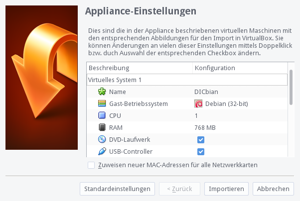
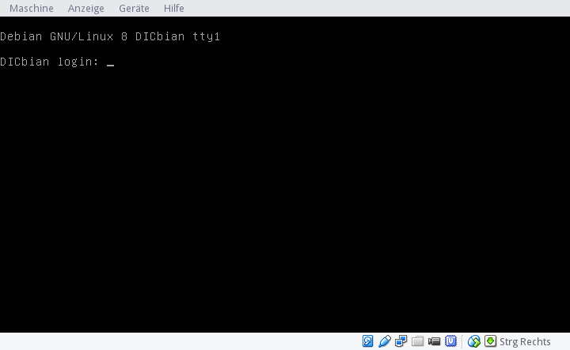

Semiversus | DICbian | URL: ../../dic/komplexe_digitale_systeme/dicbian.html
DICbian
Allgemeines
Die Übungen werden mittels VirtualBox und DICbian durchgeführt. Steht ein Linux bereits zur Verfügung kann dies selbstverständlich auch genutzt werden.
Installation von Virtualbox
-
Für Windows das Installationspaket herunterladen und installieren. Für andere Betriebssysteme unter Downloadseite das entsprechende Installationspaket auswählen.
-
Das Virtualbox Image von DICbian herunterladen
-
Durch Öffnen der Datei DICbian.ova wird das Image importiert. Im Dialog "Appliance importieren" auf "Importieren" klicken.

-
In Virtualbox "DICbian" auswählen und mittels Doppelklick starten
-
Nach dem Bootvorgang wartet der Login

- Benutzername ist
dic, Passwort istdic(das root-Passwort isthtl)